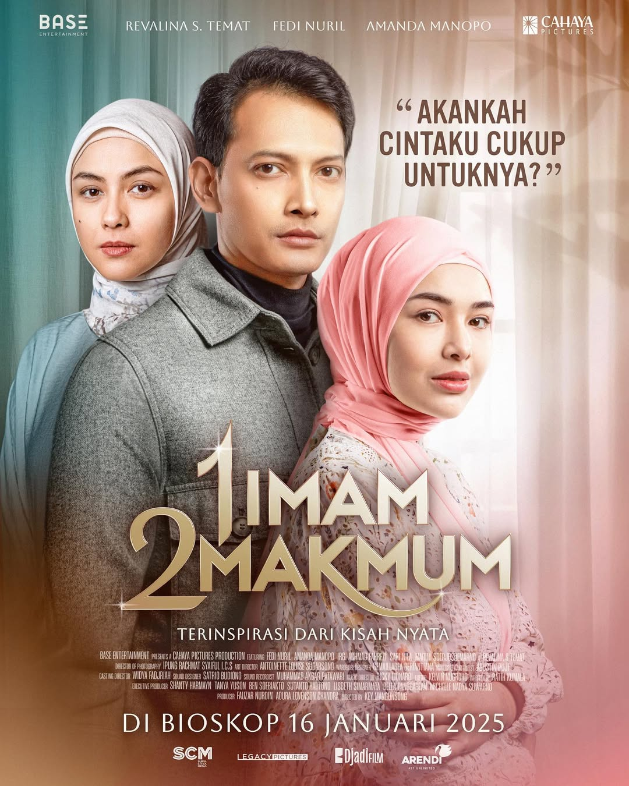

1 Imam 2 Makmum
-
Deskripsi Singkat:Film ini adalah drama romantis Indonesia yang mengangkat tema cinta, kehilangan, dan perjuangan dalam rumah tangga, khususnya ketika seseorang belum bisa move on dari masa lalu.
-
Aktor Pemeran Utama: Fedi Nuril, Amanda Manopo, Revalina Sayuthi Temat
-
Pengarang Cerita: Ratih Kumala
Sutradara: Key Mangunsong
-
Rating:
-
Sinopsis: Kisah berfokus pada Anika yang menikah dengan Arman, seorang duda yang masih sangat mencintai mendiang istrinya, Leila. Meski sudah menikah, Arman belum bisa membuka hatinya untuk Anika karena masih terikat kenangan masa lalu. Anika harus berjuang menghadapi sikap dingin suaminya, bahkan merasa seperti “bersaing” dengan seseorang yang sudah tiada. Konflik pun muncul: apakah Arman bisa benar-benar mencintai Anika, atau akan terus hidup dalam bayang-bayang masa lalu?